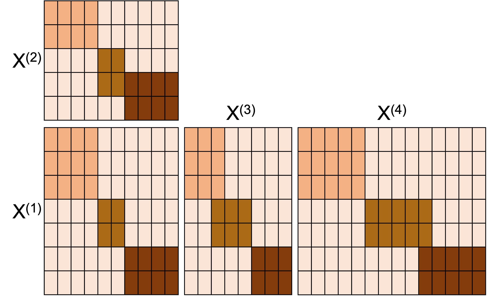
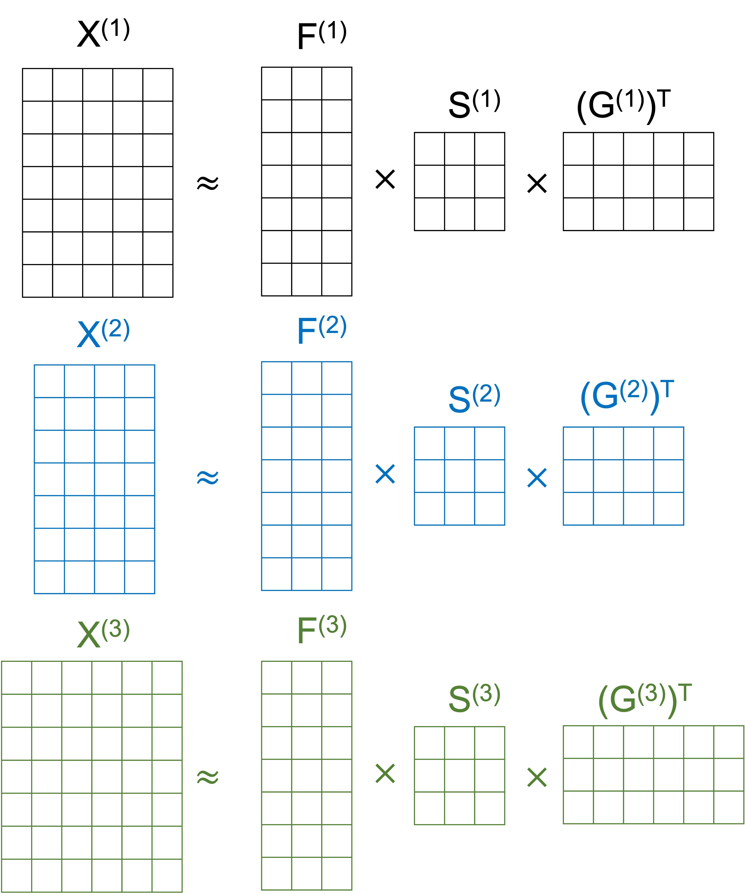

Welcome to the landing page for the resnmtf package implementing Restrictive Non-Negative Matrix Tri-Factorisation (ResNMTF) from the paper “Multi-view biclustering via non-negative matrix tri-factorisation”.
ResNMTF is a flexible method which allows for any combination of shared rows and/or columns between views. For example, if view 1 and 2 share columns and views 1, 3 and 4 share rows, as in the following figure, this can be incorporated.

It does this by approximating the data matrix for each view by the factorisation , as in the following image (for 3 views with shared rows):
Installation
You can install this R package using the following line of code:
devtools::install_github("eso28599/resnmtf") # requires devtools package to be installedUsage
To demonstrate the use of resnmtf we generate toy data with 2 views and 3 biclusters, assuming biclusters share rows across views, but do not share columns. View 1 has dimensions and view 2, .
row_clusters <- cbind(
rbinom(100, 1, 0.5),
rbinom(100, 1, 0.5),
rbinom(100, 1, 0.5)
)
col_clusters_v1 <- cbind(
rbinom(50, 1, 0.4),
rbinom(50, 1, 0.4),
rbinom(50, 1, 0.4)
)
col_clusters_v2 <- cbind(
rbinom(30, 1, 0.4),
rbinom(30, 1, 0.4),
rbinom(30, 1, 0.4)
)
data <- list(
row_clusters %*% diag(c(5, 5, 5)) %*% t(col_clusters_v2) +
abs(matrix(rnorm(100 * 50), 100, 50)),
row_clusters %*% diag(c(5, 5, 5)) %*% t(col_clusters_v2) +
abs(0.01 * matrix(rnorm(100 * 30), 100, 30))
)Application
The apply_resnmtf function is used to obtain biclusters. It takes as input multi-view data in the form of a list i.e. the data should be inputted as a list list(x_1, x_2, \dots, x_n_v).
The desired restrictions are imposed via restriction matrices phi, psi and xi which enforce shared row clusters, column clusters and row-column matching respectively.
phi <- matrix(0, 2, 2)
phi[1, 2] <- 1 # regularises towards shared rows between view 1 and view 2
phi_val <- 200 # hyperparameter chosen to enforce regularisation
results <- apply_resnmtf(data, phi = phi_val * phi)If the number of biclusters present in each view are known, this can be supplied via k_vec:
results <- apply_resnmtf(data, k_vec = rep(3, 2), phi = phi_val * phi)If instead you would like to change the range of biclusters considered initially ( by default), this can be implented via the k_min and k_max inputs:
results <- apply_resnmtf(data, k_min = 4, k_max = 10, phi = phi_val * phi)Notes:
- a non-zero
xirestriction matrix also enforces the assumption that the scale of the biclusters is equal across views. - the number of biclusters does not need to be specified, but will be determined by the bisilhouette score.
Results
The multi-view biclustering is contained within two lists defining the row and column clusters associated with the biclusters. For a specific view, both are represented via binary logic matrices, with the element equal to if row/column belongs to bicluster , and otherwise.
results$row_clusters
results$col_clustersI.e. for the given example, results$row_clusters is a list of length 2, the first element of which is a binary matrix of size where is the number of biclusters found.
Single-view data
The method can also be applied on single-view data, inputted either as a list containing the matrix of the single-view:
data <- list(
row_clusters %*% diag(c(5, 5, 5)) %*% t(col_clusters_v2) +
abs(matrix(rnorm(100 * 50), 100, 50))
)
results <- apply_resnmtf(data)Or as a matrix:
data <- row_clusters %*% diag(c(5, 5, 5)) %*% t(col_clusters_v2) +
abs(matrix(rnorm(100 * 50), 100, 50))
results <- apply_resnmtf(data)Citation
If you use our model in your work, please cite us with:
Orme, E.S.C., Rodosthenous, T. and Evangelou, M., 2025. Multi-view biclustering via non-negative matrix tri-factorisation. arXiv preprint arXiv:2502.13698.
Or with the following bibtex entry:
@misc{resnmtf,
title={Multi-view biclustering via non-negative matrix tri-factorisation},
author={Ella S. C. Orme and Theodoulos Rodosthenous and Marina Evangelou},
year={2025},
eprint={2502.13698},
archivePrefix={arXiv},
primaryClass={stat.ME},
url={https://arxiv.org/abs/2502.13698},
}